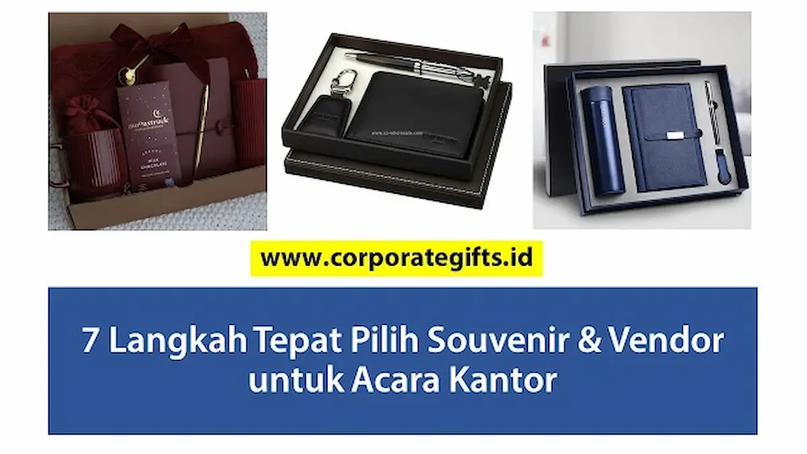

Corporate Gifts ID - Proses memilih souvenir acara kantor dan mitra vendor produksinya terdiri dari 7 tahapan sistematis: merumuskan tujuan serta KPI, membedah demografi audiens penerima, menetapkan formula anggaran total, menyeleksi kandidat produk fungsional, memeriksa standar kualitas fisik dan visual, memilih vendor berbadan hukum terpercaya, serta memfinalisasi pesanan lewat persetujuan mock-up digital dan Surat Perintah Kerja (SPK). Urutan terstruktur ini mutlak diperlukan agar cenderamata tidak salah sasaran dan anggaran pengadaan perusahaan tidak mengalami kebocoran.
Memilih cenderamata korporat melampaui sekadar memilih barang yang tampak estetik di katalog foto. Kesalahan kecil dalam fase perencanaan, seperti mengabaikan biaya kustomisasi warna khusus atau tidak meminta sampel fisik sebelum produksi massal, berisiko melahirkan kekecewaan besar saat hari pelaksanaan acara. Simak panduan komprehensif berikut sebagai standar operasional prosedur (SOP) pengadaan cenderamata kantor Anda.
Poin Kunci Keberhasilan Pengadaan Souvenir Kantor:
- Orientasi Nilai Guna: Prioritaskan produk fungsional harian yang relevan dengan rutinitas kerja penerima agar paparan merek berlangsung berkelanjutan.
- Transparansi Biaya Total: Hitung komponen biaya secara menyeluruh meliputi harga unit dasar, teknik cetak logo, boks kemasan, ongkos logistik, dan pajak (PPN).
- Proses Proofing Berlapis: Wajibkan persetujuan mock-up digital presisi dan sampel fisik dummy sebelum jalur perakitan massal dimulai.
- Mitra Terpercaya B2B: Pilih vendor berpengalaman dengan jaminan legalitas resmi, portofolio kredibel, dan komitmen garansi tukar produk cacat.
Langkah 1: Definisikan Tujuan Strategis dan Tolok Ukur Keberhasilan (KPI)
Sebelum menenggelamkan diri dalam tumpukan katalog produk, ajukan pertanyaan fundamental: "Apa hasil nyata yang ingin dicapai perusahaan melalui souvenir ini?" Tujuan yang jernih mempermudah pengambilan keputusan pada tahapan berikutnya:
- Tujuan Utama: Apakah cenderamata ditujukan untuk memperluas brand awareness publik, mengapresiasi loyalitas kinerja karyawan dalam acara gathering tahunan, atau mempererat ikatan kemitraan dengan klien korporat VIP? Tetapkan satu fokus sentral agar pesan komunikasi tidak bias.
- Tolok Ukur (KPI Terukur): Tetapkan metrik evaluasi yang dapat dihitung. Misalnya jumlah tayangan organik di media sosial dengan tagar resmi acara, persentase konfirmasi kerja sama lanjutan pascaacara, atau skor kepuasan partisipan pada kuesioner pascaevent.
Langkah 2: Pahami Demografi dan Profil Persona Penerima
Souvenir terbaik adalah barang yang benar-benar diinginkan dan dipakai oleh penerimanya. Bentuk profil persona sederhana yang memetakan rentang usia, jabatan pekerjaan, serta preferensi gaya hidup audiens:
- Segmentasi Usia & Karakter: Staf generasi muda Gen Z cenderung menyukai perangkat teknologi portabel atau perlengkapan gaya hidup santai, sedangkan jajaran direksi atau mitra senior lebih menghargai hadiah berbahan kulit asli, pena logam berbobot, atau gift set eksklusif.
- Kesesuaian Nilai Komunitas: Untuk audiens yang peduli isu keberlanjutan lingkungan, memilih souvenir kantor ramah lingkungan seperti tumbler baja tahan karat food-grade atau tas jinjing kanvas daur ulang akan jauh lebih diapresiasi ketimbang barang berbahan plastik sekali pakai.
- Kepekaan Norma & Budaya: Hindari produk yang berpotensi menimbulkan kesalahpahaman budaya, khususnya apabila acara melibatkan tamu delegasi lintas wilayah atau multinasional.
Langkah 3: Hitung Formula Anggaran Pengadaan yang Komprehensif
Kesalahan anggaran paling umum adalah hanya menghitung harga barang per unit tanpa memperhitungkan biaya ikutan. Terapkan formula kalkulasi pengadaan riil:
Total Anggaran = [(Harga Satuan Produk + Biaya Kustomisasi Logo + Biaya Kemasan Boks) × Jumlah Kuantitas] + Biaya Pengiriman Logistik + Pajak PPN (11%) + Dana Cadangan Kontinjensi (5-10%)
Penyediaan dana cadangan darurat sebesar 5% hingga 10% sangat krusial untuk mengantisipasi penambahan jumlah tamu di menit-menit akhir atau mengganti unit yang rusak akibat kesalahan penanganan saat proses pembagian di lokasi acara.
Langkah 4: Brainstorming Ide dan Seleksi 3-5 Kandidat Produk
Berdasarkan sasaran, profil tamu, dan anggaran yang telah ditetapkan, kumpulkan opsi barang lalu kerucutkan menjadi 3 hingga 5 kandidat produk terbaik. Pilihlah dari kategori terbukti sukses seperti tumbler vakum isolasi, buku catatan hardcover, flashdisk kartu memori, atau payung lipat otomasi. Mengonsentrasikan perbandingan pada beberapa produk inti menghemat waktu panitia dalam meminta komparasi surat penawaran dari berbagai rekanan.
Langkah 5: Terapkan Standar Mutu Bahan dan Harmonisasi Visual Brand
Cenderamata kantor berfungsi sebagai duta citra visual institusi Anda di ruang publik. Barang yang cepat rusak atau aplikasi logo yang mudah terkelupas akan merusak persepsi profesionalitas brand:
- Pemeriksaan Material: Pastikan material memenuhi standar keamanan dan durabilitas tinggi, seperti baja tahan karat SUS304 untuk wadah minum atau kanvas berdensitas tebal untuk tas seminar.
- Ketepatan Teknik Kustomisasi: Sesuaikan metode pencetakan dengan material dasar produk. Gunakan teknik grafir laser presisi untuk media logam/kayu, sablon presisi untuk kain, atau print UV high-definition untuk media datar plastik/akrilik.
- Kepatuhan Brand Identity: Pastikan tata letak, ukuran rasio, dan palet warna logo selaras dengan panduan identitas resmi (corporate brand guideline) perusahaan.
Langkah 6: Validasi Rekam Jejak dan Kualifikasi Vendor Terpercaya
Vendor suvenir bukan sekadar penjual barang, melainkan mitra kerja strategis yang menentukan sukses tidaknya eksekusi event Anda. Lakukan uji kelayakan berdasarkan parameter berikut:
- Portofolio Klien Korporat: Telaah daftar perusahaan, BUMN, atau kementerian yang pernah mempercayakan proyek pengadaannya kepada vendor tersebut.
- Kecepatan dan Profesionalitas Layanan: Evaluasi ketanggapan tim representatif vendor dalam merespons pertanyaan, menyiapkan surat penawaran resmi, dan memberikan rekomendasi solusi.
- Fasilitas Pembuatan Sampel Fisik (Proofing): Pastikan vendor bersedia membuat dummy sampel fisik sebelum seluruh pesanan diproduksi massal.
- Kepastian Legalitas & Garansi Produk: Pastikan vendor memiliki izin usaha berbadan hukum resmi (PT/CV), mampu menerbitkan faktur pajak resmi, serta menyediakan klausul garansi penggantian penuh jika ditemukan cacat produksi.
Tabel Rangkuman Operasional 7 Langkah Pengadaan Souvenir Kantor
Gunakan matriks operasional berikut sebagai lembar kontrol bagi tim panitia pengadaan:
| Tahapan Kerja | Aktivitas Utama Panitia | Output / Dokumen yang Dihasilkan | Tenggat Waktu Disarankan |
|---|---|---|---|
| 1. Tujuan & KPI | Menetapkan sasaran branding dan metrik keberhasilan | Brief dokumen kebutuhan acara (TOR) | H-8 Minggu sebelum acara |
| 2. Analisis Audiens | Memetakan demografi, profesi, dan minat penerima | Lembar profil persona peserta acara | H-7 Minggu sebelum acara |
| 3. Formula Anggaran | Menghitung total biaya per paket, logistik, PPN, dan kontinjensi | Rencana Anggaran Biaya (RAB) resmi | H-6 Minggu sebelum acara |
| 4. Seleksi Produk | Brainstorming dan menyaring 3-5 opsi barang fungsional | Daftar kandidat produk terpilih | H-5 Minggu sebelum acara |
| 5. Kualitas & Desain | Pemeriksaan spesifikasi bahan dan panduan logo brand | File master logo resolusi tinggi (vektor) | H-4 Minggu sebelum acara |
| 6. Seleksi Vendor | Membandingkan penawaran minimal 3 vendor berbadan hukum | Lembar komparasi harga dan portofolio rekanan | H-4 Minggu sebelum acara |
| 7. Finalisasi & SPK | Persetujuan mock-up digital/dummy dan penerbitan SPK | Surat Perintah Kerja (SPK) & bukti persetujuan mock-up | H-3 Minggu sebelum acara |

Pemeriksaan sampel fisik dummy bersama tim ahli memastikan hasil akhir produk sesuai ekspektasi standar mutu perusahaan.
Langkah 7: Finalisasi Order Melalui Surat Perintah Kerja (SPK) dan Uji Mock-up
Tahapan terakhir adalah pengikatan kerja sama produksi secara formal. Seluruh kesepakatan wajib dituangkan ke dalam dokumen tertulis sebelum pembayaran uang muka (down payment) ditransfer:
- Penerbitan Surat Perintah Kerja (SPK): Cantumkan secara mendalam rincian jenis barang, kode warna produk, metode cetak logo, jumlah pesanan, alamat tujuan pengiriman, dan tanggal tenggat penyerahan barang.
- Tanda Tangan Persetujuan Mock-up (Sign-Off Proof): Vendor wajib mengirimkan gambar visualisasi digital skala 1:1. Panitia memeriksa posisi margin logo dan ejaan teks, lalu menandatanganinya sebagai dokumen persetujuan kerja.
- Protokol Quality Control (QC) Saat Penerimaan: Saat paket cenderamata tiba di kantor, lakukan audit sampling terhadap kuantitas, kerapian kemasan, dan kelengkapan aksesoris sebelum pelunasan faktur dilakukan.
Pertanyaan Seputar Memilih Souvenir dan Vendor Acara Kantor (FAQ)
Kesimpulan dan Solusi Pengadaan Terpadu CorporateGifts.ID
Menerapkan 7 tahapan di atas mentransformasikan pengadaan cenderamata kantor dari sekadar rutinitas administratif menjadi investasi strategis yang memperkuat citra dan loyalitas mitra perusahaan.
Percayakan pengadaan souvenir acara kantor Anda kepada CorporateGifts.ID. Kami menyediakan pendampingan profesional dari kurasi ide produk, visualisasi mock-up digital tanpa biaya, penyediaan sampel fisik berstandar tinggi, hingga pengiriman terintegrasi ke seluruh wilayah Indonesia dengan garansi kepuasan 100%.

Ditulis oleh: Arinda Zakia
Senior Corporate Gifting SpecialistSpesialis pengadaan suvenir korporat dan konsultan retensi talenta di CorporateGifts.ID. Berpengalaman lebih dari 9 tahun membantu divisi Human Resources, Corporate Communication, dan Procurement di berbagai perusahaan multinasional serta instansi pemerintah dalam merancang pengadaan merchandise acara kantor yang efektif dan berdaya guna tinggi.
Lihat Profil Lengkap & Panduan Lainnya